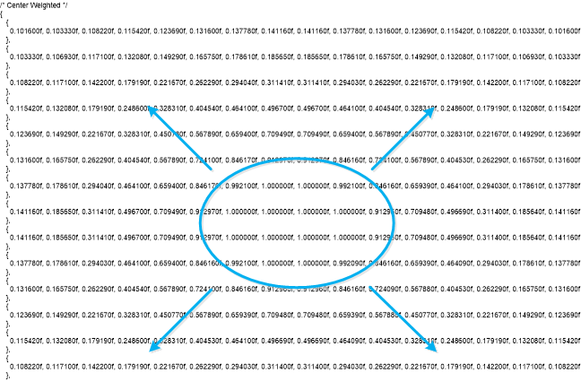

The bias (metering) mode can be set to spot, center weighted, or frame average. First, the entire image field is divided into a 16 x 16 grid that has a total of 256 individual positions. Each position on the grid is then assigned a weighting value from 0 to 1, which determines how much that point on the grid affects AE.
The numbered positions in the weighting table begin in the upper left corner of the grid. The first 16 positions are shown in the left column of the grid. Positions 17 through 32 make up the second column from the left, etc.
- Spot weighted bias – The center positions on the grid have a much higher bias value than the surrounding positions.
- Center weighted bias – More of the grid positions surrounding the center positions are given higher bias values.
- Frame average bias – Has equal bias values for each position on the grid.
The bias table values can be modified, however, default values are recommend.

The Parameter Editor information for AE bias tuning. Bias value entries in the Parameter Editor are a 16x16 LUT.
In the following example of a center weighted bias table, there are higher weight values in the center, with a smoothly decreasing weight toward the corners.
